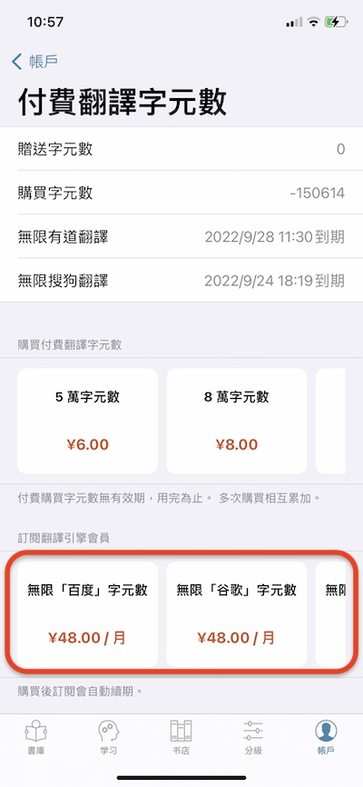
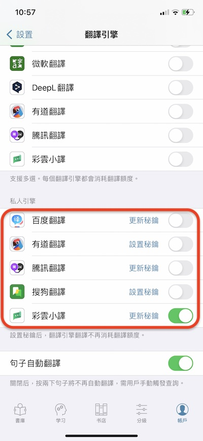

title: 如何獲得翻譯額度?
簡介
聽閱內的翻譯引擎由三方提供。聽閱集成了多家三方的翻譯引擎。為了使用這些引擎，我們首先需要通過三方提供的網站申請成為開發者，以獲取服務密鑰。利用密鑰我們就能調用三方提供的翻譯接口進行翻譯。密鑰的申請都是對外開放的，任何人都可以申請，只是流程會比較繁瑣。為了方便大家，我們以聽閱的身份從各家申請了密鑰內置於應用中，這樣大家無需自己申請就能直接使用各方的翻譯服務。但由於三方提供的翻譯服務是按字符量收費的，聽閱也需要向大家收取同等的費用。並且由於蘋果稅的原因，聽閱的收費標準會相對較高。不過，我們也為大家提供設置密鑰的功能。大家可以自己去三方引擎申請屬於自己的密鑰，然後在聽閱裏設置。
獲取方式對比
當前，用戶可以在聽閱裏直接購買翻譯額度，也可以去三方網站申請密鑰並購買額度。對於聽閱內的購買，我們也提供了兩種方式以滿足不同用戶的需求。一種是直接購買翻譯額度，一種是訂閱各引擎的會員。下面我們從價格、有效期等對這三種方式進行了對比。大家可以根據自己對翻譯引擎的使用情況選擇適合自己的方式。
| 特點 | 內購翻譯字符數 | 訂閱翻譯引擎會員 | 設置私人密鑰 |
|---|---|---|---|
| 支持的翻譯引擎 | 百度、谷歌、搜狗、微軟、DeepL、有道、騰訊、彩雲 | 百度、谷歌、搜狗、微軟、DeepL、有道 | 百度、有道、騰訊、搜狗、彩雲 |
| 價格 | 85元/100萬字符（含30%的蘋果稅） | 48元/月 | 百度：49元/100萬字符，有道：48元/100萬字符，騰訊：58元/100萬字符，搜狗：40元/100萬字符，彩雲：20元/100萬字符 * |
| 獲得的翻譯字符數 | 買多少有多少 | 無限字符 | 買多少有多少 |
| 購買後適用的翻譯引擎 | 無限製，各家通用 | 限訂閱會員對應的引擎 | 限申請密鑰對應的引擎 |
| 有效期 | 無 | 1個月 | 由三方引擎決定 |
| 是否限聽閱會員可用 | 否 | 否 | 是 |
* 價格以各三方網站的最新價格為準。
如何購買翻譯字符數
打開聽閱App，選擇賬戶->付費翻譯字符數。在「購買付費翻譯字符數」部分，我們提供了5萬、8萬、18萬、40萬、80萬、160萬等額度供大家選擇。大家可按需購買。

如何訂閱翻譯引擎會員
打開聽閱App，選擇賬戶->付費翻譯字符數。在「訂閱翻譯引擎會員」部分，我們提供了百度、谷歌、DeepL、微軟、搜狗以及有道的翻譯引擎會員。大家可選擇自己喜歡的翻譯引擎並購買對應的會員。

如何設置私人密鑰
當前，我們支持設置百度、有道、騰訊、搜狗以及彩雲小譯的私人密鑰。打開聽閱，選擇賬戶->設置->管理翻譯引擎，然後在「私人引擎」部分，點按對應翻譯引擎的「設置密鑰」按鈕，即可設置。

以下是我們整理的各家密鑰的申請文檔，供大家參考。